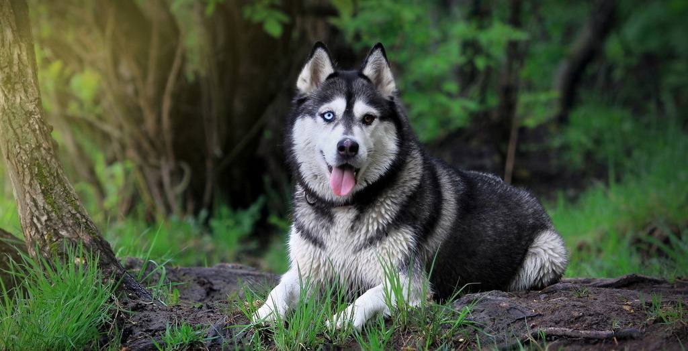

拉布拉多犬
忠实、沉着、聪明、和小孩一起让人放心，永远自足快乐，对侵入者戒心强，适合郊区生活。原先是当搬运工的，现在是红得发紫啊。拉布拉多猎犬的嗅觉优异，二次世界大战时被用来寻找地雷，现在则用作警犬，嗅闻找出非法药物。
萨摩耶犬
《北方的那努克》里面就有这种可爱的狗狗。不仅很耐寒还很耐热，是一种深情的伴侣犬，有它的陪伴你会感觉到很温馨.
松狮
别以为那融融的熊人毛会是很好抱的，它们通常都会令你失望因为它们不太喜欢给人逗着玩的
哈士奇
哈士奇犬的典型性格为友好，温柔，警觉并喜欢交往。它不会呈现出护卫犬强烈的领地占有欲，不会对陌生人产生过多的怀疑，也不会攻击其他犬类。
博美犬
博美犬有华丽的被毛，不仅需要定期修剪也要每天梳理，并不适合忙碌的人。但作为小型犬，博美还是很好的家庭伴侣。
 首页
首页 养狗知道
养狗知道 狗狗介绍
狗狗介绍 领养宠物
领养宠物 在线留言
在线留言